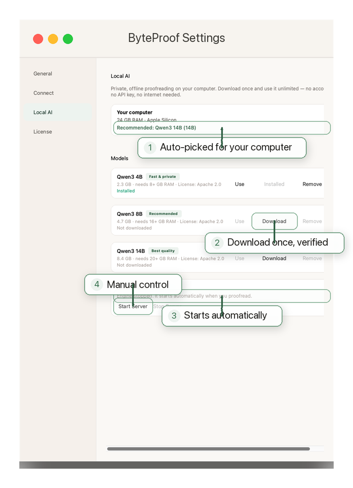

Microsoft Word — 修订记录
校对学术论文、学位论文或报告，文档始终在你手里。
- ✓每处修改都以 Word 修订的形式出现，你可以直接接受或拒绝。
- ✓可选的审阅者批注会说明每处修改的理由。
- ✓引用、公式和表格受保护，无法编辑。
ByteProof 是一款用 AI 校对文字的桌面应用。在 Microsoft Word 里，它给出修订记录和批注。在其他应用里，它把你选中的文字替换成润色好的最终版本。
 Word 中的修订记录
在任何应用里润色文本
在 macOS 上按 Cmd+Shift+' 进行校对
Word 中的修订记录
在任何应用里润色文本
在 macOS 上按 Cmd+Shift+' 进行校对
本地私有 AI，或你已经在用的模型
ByteProof 会识别你正在处理的内容，并自动调整。
校对学术论文、学位论文或报告，文档始终在你手里。
邮件、浏览器、编辑器和聊天窗口。选中文字，按快捷键，就能得到改好的文本。
选一个场景，就能在 ByteProof 窗口里看到真实的修改建议。应用之前，你都可以先审阅。

面向投稿顶级期刊的稿件，ByteProof 会理顺语法、标点和行文，同时保留论证本身。
本文研究公司治理与公司业绩之间的关系。我们发现，治理更强的公司业绩显著更好，但这一效应受机构持股影响。在分析师覆盖度更高的公司中，这一效应更强。我们的结果在替代设定下都稳健，包括加入额外控制变量和剔除异常值。
本文研究公司治理与公司业绩之间的关系。我们发现，治理更强的公司业绩显著更好，但这一效应受机构持股影响。在分析师覆盖度更高的公司中，这一效应更强。我们的结果在替代设定下都稳健，包括加入额外控制变量和剔除异常值。
标出并删掉冗长的学术用语，研究结论不变。

一封普通的团队邮件：去掉废话，语气友好，意思清楚。
“大家好，会议从周三改到周四上午 10 点。给你带来不便，抱歉。议程已更新，放在共享文件夹里，方便你开会前先看一下。”
“大家好，会议从周三改到周四上午 10 点，给大家带来不便，抱歉。议程也更新了，放在共享文件夹里，方便大家在会前查看。”
啰嗦的邮件变得清晰、友好，可以直接发送。

章节草稿：保留原意和作者的语气，删去多余的措辞。
“为考察公司治理与公司价值之间的关系，本章借助代理理论。分析聚焦独立董事的作用，以及独立董事的存在如何影响监督质量。现有文献在很大程度上忽视了董事任期对监督有效性的影响。”
“为考察公司治理与公司价值的关系，本章借助代理理论，聚焦独立董事的作用，以及独立董事如何影响监督质量。现有研究大多忽略了董事任期对监督效果的影响。”
保留原意和语气，删掉多余的话。

一封专业信函：正式但清楚，去掉过时的套话，把话说得直接。
“你的账户有 $450 未结余额，从 3 月 1 日起逾期。请尽快付款。如有疑问，请联系账务团队。”
“你的账户有 $450 未结余额，自 3 月 1 日起逾期。请尽快安排付款。如有疑问，请联系我们的账务团队。”
正式但直接，删掉废话。
ByteProof 面向学术写作和专业写作，这类写作容不得小错。
修改会以 Word 修订形式显示，你可以逐条查看、接受或拒绝。
审阅者评论是可选的，用来解释改动的原因，而不是悄悄改写你的内容。
参考文献、公式和表格原样保留，校对不会打乱排版。
ByteProof 会读取你选中内容前后的文字，让语气、指代和含义保持一致。
更想用云端模型？用你自己的密钥连接 DeepSeek、OpenAI、Anthropic、Google Gemini、xAI、Groq、Perplexity，或你自己的 Ollama 服务器。
ByteProof 会下载一个小型 Qwen3 模型，在你的电脑上运行。它离线工作，不需要账号或 API 密钥。7 天试用期结束后，Local AI 仍可在有限的免费模式下使用；NZ$49 的许可证可解锁无限使用。
另外还有： 英式／澳式／新西兰式或美式拼写、精准或创意编辑风格、可调创意度、按服务商选择模型，以及一个 测试连接 按钮适用于每个提供商。 本地 AI 模型下载一次，使用前会经过验证。可在任何应用中校对 在 macOS 上按 Cmd+Shift+' （Mac）或 Ctrl+Shift+' （Windows）。
ByteProof 不会挡你的路。一个小窗口、一份清晰的差异对比，一个按钮就能应用。


看完整演示，或者直接跳到 60 秒的 Word 演示或 2 分钟的设置指南。
不到九分钟，看完修订记录、审阅人批注，以及在任何应用里的润色效果。
在 Microsoft Word 里处理修订痕迹和审阅者批注，从头到尾。
从下载到第一次校对：安装、权限设置，以及如何选择你的 AI。
下载 macOS 或 Windows 版本。7 天试用包含全部功能，无需信用卡。
适用于 M1、M2、M3 及更新的 Mac。DMG 安装包。
下载 macOS 版适用于 Intel Mac。DMG 安装包。2.1.0 是当前 Intel 版本。
下载 macOS 版 2.1.0适用于 Windows 10 和 11。ZIP 压缩包——解压后运行 ByteProof.exe。
下载 Windows 版第一次用 macOS？ 如果 macOS 提示无法验证 ByteProof，请打开 系统设置 → 隐私与安全性，向下滚动到 安全 部分，点击 打开 ByteProof 旁边的 Anyway ，然后确认。你只需要做一次。
第一次用 Windows？ 如果 SmartScreen 提示“Windows 已保护你的电脑”，点击 更多信息 → 仍然继续新应用出现这种情况很正常。Microsoft Store 版本正在准备中，安装后不会有这个警告。
安装包放在 GitHub Releases 上，每个新版本都会自动更新。想直接发邮件？写信到 bytemind.nz@gmail.com.
ByteProof 由一名开发者开发和运营，不是靠订阅堆起来的机器。这个创始价格是给早期支持者的回报。
功能全含，不需要信用卡
一次付费，长期使用，含商品及服务税。
通过 Polar 安全结账。购买后，许可证密钥会自动发到你的邮箱——打开 ByteProof → 设置 → 许可证 →“已购买？用许可证密钥激活”，粘贴进去即可。最多可在 2 台电脑上使用。有疑问？发邮件至 bytemind.nz@gmail.com.
选中你要校对的内容，然后按快捷键（在 macOS 上按 Cmd+Shift+' on macOS, Ctrl+Shift+' 在 Windows 上）。ByteProof 读取选中的内容，用自带的 Local AI 或你选择的提供商处理，然后在自己的窗口里显示建议的修改。
在 Microsoft Word 中，修改会以修订形式呈现，并可选择是否加批注。在其他应用中，你会得到一份干净的最终版本，可直接应用或复制。
开箱即用，ByteProof 自带私有本地 AI：一个完全在你电脑上运行的 Qwen3 模型。它会根据你的内存选合适的大小——不用账号、不用 API 密钥、不用订阅。
你也可以用自己的密钥连接 DeepSeek、OpenAI、Anthropic、Google Gemini、xAI、Groq、Perplexity，或你自己的 Ollama 服务器。
使用本地 AI 时，你的文本完全在你的电脑上处理，不会离开电脑。这是默认设置。
如果你接入云服务商，ByteProof 只会把你选中的文本发给该服务商。API 密钥存在你电脑上的应用里，不会共享。
支持。ByteProof 支持 macOS 和 Windows 上的 Microsoft Word，包括修订和批注。在 Word 之外，任意应用润色模式在两个平台上都能用。
仅用于修订痕迹校对。没有 Word，ByteProof 仍可在邮件、浏览器、编辑器和其他应用中润色选中的文字。
支持 Apple Silicon 或 Intel Mac 上的 macOS，以及 Windows 10 / 11。本地 AI 建议内存 8 GB 以上；应用会为你的电脑选最合适的模型。
在 macOS 上，出现提示时授予辅助功能权限，全局快捷键和 Word 集成才能正常工作。
ByteProof 提供 7 天免费试用，所有功能都能用。试用结束后，你可以继续用 ByteProof 的有限免费模式：仅本地 AI，每天最多 3 次校对。许可证是一次性创始价 NZ$49（含 GST），解锁全部功能，不限使用次数。没有订阅，没有周期性费用。
结账后，Polar 会自动把许可证密钥发到你的邮箱（也可以在 Polar 的购买记录页面找到）。打开 ByteProof，进入设置 → 许可证 →“已经付过款？用许可证密钥激活”，粘贴密钥。ByteProof 会立即激活这台电脑。
如果还没安装 ByteProof，先安装，然后按同样的步骤操作。你随时可以在第二台电脑上激活。
每个许可证最多可在 2 台电脑上使用。要换电脑，先在旧电脑上打开“设置 → 许可证”，选择“停用此电脑”，释放名额。
ByteProof 由 ByteMind Ltd 开发并签名。Apple 的公证流程还没走完，macOS 可能会提示“Apple 无法验证 ByteProof.app 是否不含恶意软件”。
首次打开时：打开 系统设置 → 隐私与安全性，向下滚动到 安全 部分，点击 打开 ByteProof 旁边的 Anyway ，然后确认。你只需要做一次。
邮箱 bytemind.nz@gmail.com。ByteMind Ltd 是新西兰注册公司，直接作答。